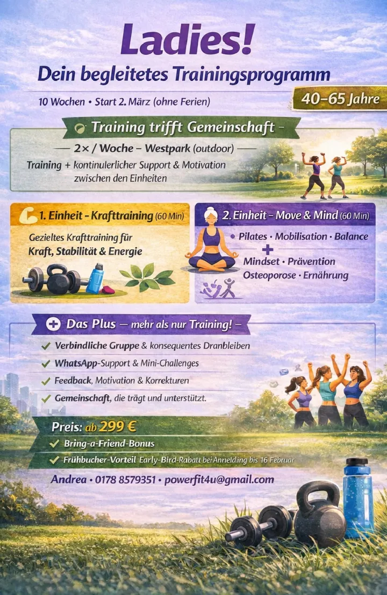
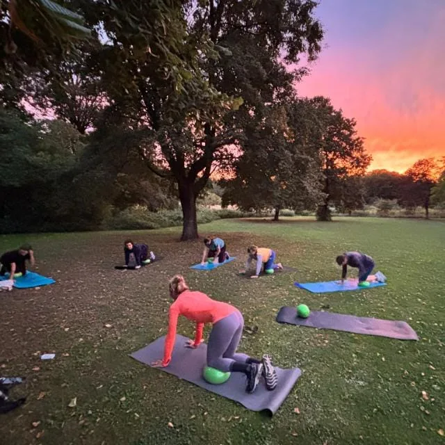
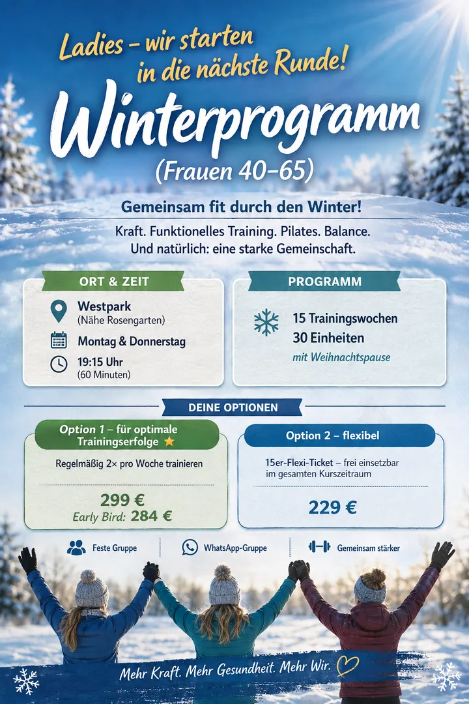
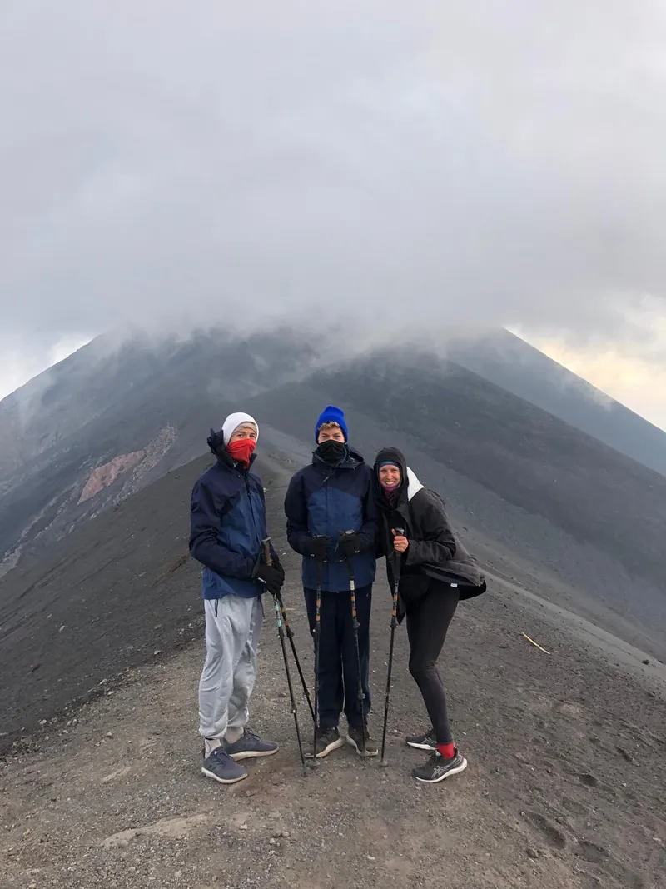
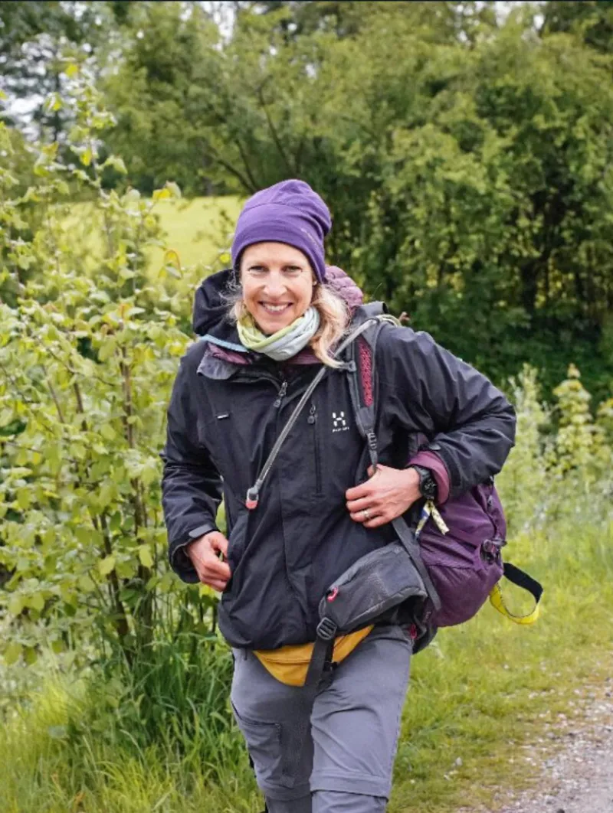
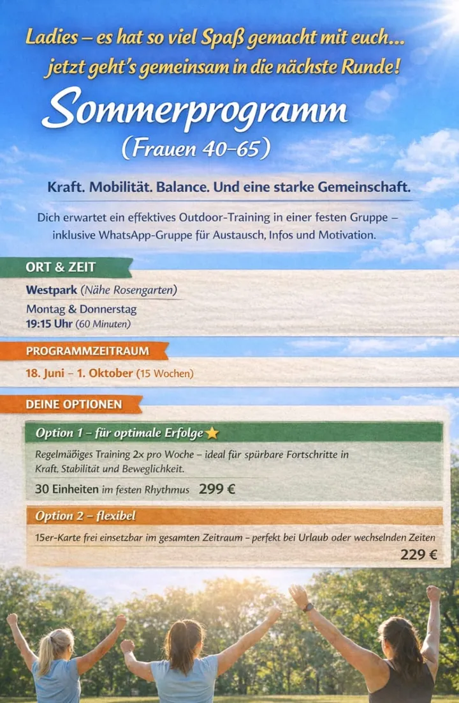

Frühjahreskurs
Outdoor-Training für Frauen (40-65 Jahre) im Westpark: Kraft, Pilates, Balance und Mindset - 10 Wochen, Mo & Do 19:15 Uhr.
Auf die WartelisteOutdoor-Training · Westpark München
Fitness-Trainerin · Reha Übungsleiterin · Pilatestrainerin
Gezielte Kräftigung & Stabilität für Frauen (40-65 Jahre) - funktionelles Outdoor-Training im Westpark München.
Als ehemalige Bauingenieurin weiß ich, wie wichtig ein stabiles Fundament ist - auch für deinen Körper.
Du musst nichts mitbringen. Das Training ist für jedes Level geeignet, die Übungen werden angepasst.
Bewegung darf fordern, soll aber machbar bleiben. Bei Einschränkungen passt Andrea die Übungen für dich an.
Du trainierst in einer kleinen, festen Gruppe mit positiver und motivierender Atmosphäre.

Frische Luft. Kleine Gruppe.
Bei Dämmerung auf der Wiese im Westpark: Kräftigung, Pilates und Balance, draußen statt im Studio.
Zum Winterprogramm
Gemeinsam fit durch den Winter! Mein Winterprogramm ist speziell für Frauen (40-65 Jahre) konzipiert - mit gezielter Kräftigung, funktionellem Training, Pilates und Balance.
15 Trainingswochen, 30 Einheiten mit Weihnachtspause. Das perfekte Programm, um Kraft, Stabilität und Gesundheit auch in der dunklen Jahreszeit zu bewahren und zu stärken. Die Trainingseinheiten bauen sich strukturiert auf und werden durch motivierende Gruppenatmosphäre und regelmäßige Unterstützung begleitet.
Wann & wo: Westpark (Nähe Rosengarten), Mo & Do 19:15 Uhr / 60 min.
Du hast die Wahl zwischen zwei Optionen:
Vertrau auf deine Stärke und bleib durch den Winter fit und motiviert. Gemeinsam machen wir das!
Andrea motiviert mit ihrer herzlichen Art und schafft es, jede Trainingseinheit abwechslungsreich und herausfordernd zu gestalten. Ob Einsteiger oder Fortgeschrittene – jeder findet hier das passende Level und kann sich kontinuierlich weiterentwickeln. Ich habe durch ihr Training selbst eine enorme Veränderung erlebt: deutlich mehr Kraft, weniger Körperfett und ein ganz neues Körpergefühl.
Ich bin erst neu, seit Mitte Mai dabei und find es super. Die Stunden machen richtig Spaß und die Gruppe ist super nett. Das Training ist sehr abwechslungsreich, es wird nie langweilig. Andrea motiviert einen super und sorgt dafür, dass man alles gibt – Muskelkater am nächsten Tag ist fast garantiert. Sie geht individuell auf die Wünsche ein und passt die Übungen für einen an wenn man es noch nicht so schafft oder eine Einschränkung hat. Absolute Empfehlung!!!
Du machst es einfach soooo toll und bist immer so gut drauf. Ich fühle mich wirklich richtig richtig wohl bei euch auch wenn ich noch nicht so fit bin. Am Anfang hatte ich wirklich bedenken. Nun bin ich aber froh das ich so akzeptiert werde wie ich bin. Und ich hoffe natürlich auch immer noch besser zu werden 🤗
Ich bin seit März im Kurs bei Andrea und bin wirklich total begeistert: Die Kurse sind sehr abwechslungsreich, sehr intensiv (Bauch, Arme, Rücken!), immer wieder neue Übungen mit unterschiedlichen Geräten für Kraft. Dann wieder Gleichgewicht oder auch Pilatesübungen. Sie schaut genau hin und korrigiert die Haltung. Die Atmosphäre ist positiv und motivierend! Ich fühl mich wesentlich fitter und versuche keine Stunde zu verpassen!
PS: Es gibt auch immer wieder Infos zur Ernährung, die mich auf jeden Fall sensibilisieren, mal wieder was Neues auszuprobieren oder alte Gewohnheiten zu ändern.
Ich bin unglaublich froh, Andrea gefunden zu haben! Sie motiviert mich immer wieder aufs Neue und sorgt dafür, dass das Training effektiv ist und Spaß macht. Ihre herzliche und professionelle Art macht jede Trainingseinheit zu etwas Besonderem.
Andi ist mein Anker in der Woche: für gute Laune, frische Luft und immer wieder neue „Muskelerfahrungen“ 😊 Gemeinsam etwas für uns tun und Energie tanken – einfach stark!!!
Als Fitnesstrainerin und Reha-Übungsleiterin begleite ich seit vielen Jahren Menschen in unterschiedlichsten Trainingsformaten - von ruhigen, gesundheitsorientierten Angeboten wie Wirbelsäule, Rücken oder Pilates bis hin zu kraftvollen Powerkursen wie Cycling, Fatburn oder BodyStyling sowie Reha-Kursen.
Im Mittelpunkt meiner Arbeit stehen funktionelle Kräftigung, eine stabile Körpermitte, gute Haltung und ein klar strukturierter Trainingsaufbau. Bewegung darf fordern, soll dabei jedoch realistisch bleiben und langfristig Wirkung zeigen. Saubere Übungsausführung und ein bewusstes Körpergefühl haben dabei einen hohen Stellenwert.
Mein beruflicher Hintergrund als Bauingenieurin prägt bis heute die Art, wie Training aufgebaut wird: strukturiert, nachvollziehbar und mit Blick für Belastbarkeit und Stabilität. Ziel ist ein gesundheitsorientiertes Training, das stärkt, Vertrauen in den eigenen Körper aufbaut und nachhaltig im Alltag wirkt.


Bewegung war für mich nie nur Ausgleich oder Training. Sie war immer ein Weg, mich selbst zu fordern, Grenzen zu verschieben und Vertrauen in den eigenen Körper zu entwickeln.
Herausforderungen spielen dabei eine zentrale Rolle. Mehrmonatige Reisen und intensive körperliche Erfahrungen - darunter ein Dschungeltrek in Sumatra, eine Vulkanbesteigung in Guatemala und der 100-km-Megamarsch - haben gezeigt, wie viel möglich ist, wenn man dranbleibt, auch wenn es unbequem wird. Diese Erlebnisse haben meine Sicht auf Belastung, Durchhaltevermögen und mentale Stärke nachhaltig geprägt.
Nicht Perfektion, sondern Bereitschaft ist entscheidend. Schritt für Schritt Stabilität aufzubauen, sich einzulassen und weiterzugehen, auch wenn es anstrengend wird - diese Haltung prägt heute meine Arbeit.
Als Mutter von vier Söhnen gehören Organisation, Belastbarkeit und Flexibilität zum Alltag. Diese Erfahrungen fließen ebenso ein wie Struktur, Klarheit und Motivation. Bewegung wird dabei nicht beschönigt, sondern ehrlich vermittelt: fordernd, stärkend und machbar.
Mein Anspruch ist, Training so zu gestalten, dass es nicht nur körperlich stärkt, sondern Selbstvertrauen aufbaut - und zeigt, dass Herausforderungen keine Hindernisse sind, sondern Entwicklung ermöglichen.
Gezielte Übungen für einen starken Rücken
Alltagsnahes Krafttraining für Rücken, Rumpf und Stabilität
Körperbewusstsein und Kontrolle
Effektives Training für den gesamten Körper
Ausdauer und Energie für mehr Vitalität
Körpermitte stärken für bessere Haltung

Wir trainieren auch bei schlechtem Wetter. Bisher gab es noch nie einen wetterbedingten Ausfall. Falls es wirklich einmal unmöglich ist zu trainieren (z. B. bei Gewitter) und eine Einheit ausfallen muss, wird der Termin hinten angehängt.
Ja, das Training ist für jedes Level geeignet. Die Übungen werden individuell angepasst.
Ja, eine Probestunde ist möglich. Melde dich einfach über das Kontaktformular.
Eigentlich nichts - am besten nur eine Trinkflasche.
Diese Outdoor-Kurse sind beendet. Das nächste Frühjahrsprogramm ist ab März 2027 geplant, die Details folgen. Wenn du dabei sein möchtest, trage ich dich gerne auf die Warteliste.

Outdoor-Training für Frauen (40-65 Jahre) im Westpark: Kraft, Pilates, Balance und Mindset - 10 Wochen, Mo & Do 19:15 Uhr.
Auf die Warteliste
Kraft, Stabilität und Ausdauer in kleiner Gruppe: funktionelle Kräftigung, Pilates-Elemente und gelenkschonendes Ausdauertraining.
Auf die WartelisteIch arbeite mit Fitnessstudios, Vereinen und Trägern im Gesundheitsbereich zusammen. Kooperationen und Kursleitungen sind nach Absprache möglich.